Method A: Installation with the EXE
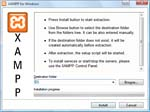
Using the self-extracting archive is the easiest way to install
XAMPP. Start the EXE file, choose a directory and click on "Install".
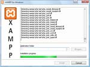
XAMPP is extracting now and the setup script "setup_xampp.bat"
will be start automatically.
The self-extracting archive knows following parameters:
- -d[targetdir]
default is "C:\"
- -s or -s1
start extraction automatically without
progress indicator
- -s2
start extraction automatically with progress
indicator
- -sp[extract|auto]
- "extract" = don't start the setup script
- "auto" = setup script without keyboard input, using
default values
E.g. you can make an automatic installation of XAMPP into the
directory "D:\www" with:
xampp-win32-1.7.3.exe -dD:\www -s2 -spauto
Warning:
All files in the target directory will be overwritten!
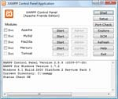
Now you can start the "XAMPP Control Panel". With the CP you can
start/stop the servers, or install them as Windows services (checkbox
"Svc").
Method B: "Installation" without the Installer
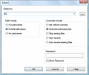
Unzip the zip archives into the folder of your choice. XAMPP is
extracting to the subdirectory "[Ziel]\xampp"
below the selected target directory. Now start the file "setup_xampp.bat",
to adjust the XAMPP configuration to your system.
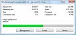
If you choose a root directory "C:\"
as target, you must not start "setup_xampp.bat".
Like with the EXE, you can now use the "XAMPP Control Panel" for
additional tasks.
The setup script
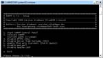
With the setup script "setup_xampp.bat", which you can
start at every time and is located in the folder "\xampp", you can:
- start the "XAMPP Control Panel"
- in the case you have moved XAMPP to another location, you can
relocate the paths in the configuration files. You can also switch
between absolute (with drive letter) and relative (without drive letter)
path names
- (de-)activate basic functions or add-ons
At the first start (XAMPP installation):
- you can install startmenu/desktop icons
- you must locate the paths
- the timezone for PHP and MySQL is configured
I want to start XAMPP without setup
If you extract XAMPP in a top level folder like "C:\" or "D:\",
you can start most servers like Apache or MySQL directly without
execution of the file "setup_xampp.bat".
Not using the setup script, or selecting relative paths in the setup
script, is preferred if you are installing XAMPP on a usb drive.
Because on each pc such a drive can have an other drive letter. You can
switch from absolute to relative paths at any time with the setup
script.
Practice 1: The XAMPP Shell and the CLI
For all friends of the console ("cmd.exe"), there is the XAMPP Shell
"xampp_shell.bat".
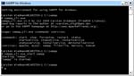
The XAMPP Shell is a command line interface with an adjusted
searchpath ($PATH) for the XAMPP tool. Also some environment
variables are set.
If you have already opened a command shell, you can set the
necessary paths and variables for XAMPP with:
\xampp\xampp_shell.bat setenv
Especially working with PEAR ("pear.bat") or Perl ("cpanp.bat"
/ "ppm.bat") should be done with the XAMPP Shell.
All peoples who want control the XAMPP servers in the shell, or
remote with e.g. telnet, can use the XAMPP CLI (Command Line Interface).
Usage:
xampp_cli.exe «command» «service»
Examples:
- start/stop Apache and MySQL
- xampp_cli start xampp
- xampp_cli stop xampp
- (de-)install Apache as Windows service
- xampp_cli installservice apache
- xampp_cli deinstallservice apache
- start/stop Mercury
- xampp_cli start mercury
- xampp_cli stop mercury
If you start the CLI without a parameter, you can see the available
ones.
Practice 2: Start, stop, test the XAMPP servers
The universal control center is the "XAMPP Control Panel" (thanks www.nat32.com). It is
started with:
\xampp\xampp-control.exe
As you know this from older XAMPP versionsh, you can also use some
batchfiles to start/stop the servers:
- Apache & MySQL start:
- \xampp\xampp_start.exe
- Apache & MySQL stop:
- \xampp\xampp_stop.exe
- Nur Apache start:
- \xampp\apache_start.bat
- Nur Apache stop:
- \xampp\apache_stop.bat
- Nur MySQL start:
- \xampp\mysql_start.bat
- Nur MySQL stop:
- \xampp\mysql_stop.bat
- Mercury Mailserver start:
- \xampp\mercury_start.bat
- Mercury Mailserver stop:
- \xampp\mercury_stop.bat
- FileZilla Server start:
- \xampp\filezilla_start.bat
- FileZilla Server stop:
- \xampp\filezilla_stop.bat
After starting of Apache (and MySQL), go to the address http://localhost/ or http://127.0.0.1/ in
your browser and examine all of the XAMPP examples and tools.
Practice 3: Installing a particular server as as service
Each server in XAMPP you can install also as Wndows service:
- Apache service install:
- \xampp\apache\apache_installservice.bat
- Apache service uninstall:
- \xampp\apache\apache_uninstallservice.bat
- MySQL service install:
- \xampp\mysql\mysql_installservice.bat
- MySQL service uninstall:
- \xampp\mysql\mysql_uninstallservice.bat
- FileZilla service install:
- \xampp\FileZillaFTP\filezilla_installservice.bat
- FileZilla service uninstall:
- \xampp\FileZillaFTP\filezilla_uninstallservice.bat
- Mercury service install:
- \xampp\MercuryMail\mercury_installservice.bat
- Mercury service uninstall:
- \xampp\MercuryMail\mercury_uninstallservice.bat
Practice 4: The XAMPP Add-Ons
Still questions? See also:
»Forum -
Questions about Add-Ons«
Many additional add-ons exist for the development with the main
package. At the moment, the official add-ons for win32 from this side
are:
- Perl add-on with mod_perl and a selection of important Perl
Modules.
As of XAMPP 1.7.2 part of the basis package.
- Tomcat add-on with mod_jk and Sun JRE5
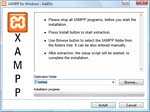
You can install add-ons like the XAMPP basis package, with a EXE or a
ZIP. Extract the add-ons directly into the XAMPP directory, e.g. "C:\xampp". In contrast to the XAMPP basis
package, you must always start the setup script "setup_xampp.bat"
(manually or automatic). The setup script integrates the add-on into
the XAMPP package.
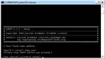
With the setup script, you can (de-)activate an add-on (if this
function is available).
Additional XAMPP Add-Ons you can find at
SourceForge.
Practice 5: The XAMPP upgrades
With a new XAMPP version, there is normally a upgrade package too.
Additionally, we have sometimes small patches between the releases.
An upgrade is always problematically and there can be errors in the
upgrade process. Because of this, you should always make a backup from
your XAMPP folder before you upgrade it.
werden.
We are trying to adjust your configuration files during the upgrade
progress, if necessary. Especially if a new XAMPP have a lot of changes
compared to the old one, we are providing no upgrade package for
security reasons. Sorry.
As with the add-ons, install the upgrade directly into the XAMPP
directory (e.g. "C:\xampp"). And you
must also start the setup script "setup_xampp.bat".
The XAMPP security console
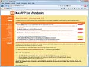
As mentioned at another place,
XAMPP is not meant for production use but only for developers in a
development environment. XAMPP is configured is to be as open as
possible and to allow the web developer anything he/she wants. For
development environments this is great but in a production environment
it could be fatal.
Here a list of missing security in XAMPP:
- The MySQL administrator (root) has no password.
- The MySQL daemon is accessible via network.
- phpMyAdmin is accessible via network.
- The XAMPP demopage is accessible via network.
- The default users of Mercury and FileZilla are known.
All points can be a huge security risk. Especially if XAMPP is
accessible via network and people outside your LAN. It can also help to
use a firewall or a (NAT-) router. In case of a router or firewall, your
pc is normally not accessible via network. It is up to you to fix these
problems. As a small help there is the "XAMPP Security console".
Please secure XAMPP before publishing anything online. A firewall or
an external router are only sufficient for low levels of security. For
slightly more security, you can run the "XAMPP Security console" and
assign passwords.
If you want have your XAMPP accessible from the internet, you should
go to the following URI which can fix some problems:
http://localhost/security/
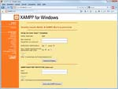
With the security console you can set a password for the MySQL user
"root" and phpMyAdmin. You can also enable a authentication for the
XAMPP demopage.
This web based tool does not fix any problem! Especially the
FileZilla FTP server and the Mercury mail server you must secure
yourself. If you don't need these servers, don't start them. A server
which is not started, is very secure!
Method A: with the uninstall script
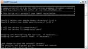
If you want uninstall XAMPP, you can use the uninstall script:
\xampp\unstall_xampp.bat
This script:
- deinstalls the Windows services
- delete the startmenu/desktop icons
- delete the XAMPP directory
If selected, the directories "\xampp\htdocs"
and "\xampp\mysql\data" are not
deleted. But you should really thinl about, if need something from your
stuff, like configuration files, before you start the uninstall
process..
Method B: just delete it
It's also possible to remove/delete by your own:
- stop all serves
- remove the Windows services
- stop the XAMPP Control
- delete the startmenu/desktio icons
- delete the XAMPP directory
As with the unnstall script, 1st backup things you still need, 2nd
delete...
Question 1: What is the "Lite" version of XAMPP?
XAMPP Lite (means "light" as in "light-weight") is a smaller bundle
of XAMPP components, which is recommended for quick work using only PHP
and MySQL. Some servers or tools such as Mercury Mail and FileZilla FTP
are missing in the Lite version.
Question 2: Where should I place my web content?
Problems? See also:
»FAQ -
XAMPP for Windows«
The main directory for all WWW documents is \xampp\htdocs.
If you put a file "test.html" in this directory, you can access it with
the URI "http://localhost/test.html".
And "test.php"? Just use "http://localhost/test.php".
A simple testscript can be:
<?php
echo 'Hallo world';
?>
A new subdirectory for your web? Just make a new directory (e.g.
"new") inside the directory "\xampp\htdocs"
(best without whitespaces and only ASCII), create a test file in this
directory and access it with "http://localhost/new/test.php".
Further specifics:
- HTML:
- Executable: \xampp\htdocs
Allowed endings: .html .htm
=> basic package
- SSI:
- Executable: \xampp\htdocs
Allowed endings: .shtml
=> basic package
- CGI:
- Executable: \xampp\htdocs and \xampp\cgi-bin
Allowed endings: .cgi
=> basic package
- PHP:
- Executable: \xampp\htdocs and \xampp\cgi-bin
Allowed endings: .php
=> basic package
- Perl:
- Executable: \xampp\htdocs and \xampp\cgi-bin
Allowed endings: .pl
=> basic package
- Apache::ASP Perl:
- Executable: \xampp\htdocs
Allowed endings: .asp
=> basic package
- JSP Java:
- Executable: \xampp\tomcat\webapps\java (e.g.)
Allowed endings: .jsp
=> Tomcat add-on
- Servlets Java:
- Executable: \xampp\tomcat\webapps\java (e.g.)
Allowed endings: .html (u.a)
=> Tomcat add-on
Question 3: Can I move the XAMPP installation?
Yes, that's possible with XAMPP. After moving of the XAMPP
directory, jou must execute "setup_xampp.bat". The paths in the
configuration files will be adjusted with this step.
If you have installed any server as Windows service, you must first
remove the Windows service, and after the moving you can install the
service again.
Warning:
The configuration files from your own scripts, like for the software
phpBB, are not adjusted. This task is up to you. But it's possible to
write a "plug-in" the installer. With such a plug-in, the installer can
adjust such files too..
Question 4: "automatic start pages" for the WWW directories?
The standard filename for the Apache function "DirectoryIndex" is
"index.html" or "index.php". Every time you are just browsing to a
folder (e.g. "http://localhost/xampp/"),
and Apache can find such a file, Apache is displaying this file instead
of a directory listing.
Question 5: Where can I change the configuration?
Almost all settings in XAMPP you can change with configuration
files. Just open the file in a textedit and change the setting you want.
Only FileZilla and Mercury should be configured with the application
config tool.
A list of the configuration files you can find in the table configuration files.
Where can I get more information (FAQs, etc.)?
Problems? See also:
»FAQ -
XAMPP for Windows«
Still questions? See also:
»Apache Friends Support Forum«
What is where?
|
File (Directory)
|
Usage
|
|
\xampp\apache\conf\httpd.conf
|
The main configuration file for Apache. It's including other
files from the subdirectory "extra".
|
|
\xampp\FileZillaFTP\FileZilla
Server.xml
|
The configuration file for the FileZilla FTP server. It's
configured with the application "FileZilla Server Interface.exe"
(button "Admin" in CP).
|
|
\xampp\MercuryMail\mercury.ini
|
The configuration file for the Mercury SMTP server. It's
configured with the application "mercury.exe" (button "Admin"
in CP).
|
|
\mysql\bin\my.ini
|
The configuration file for the MySQL Server.
|
|
\xampp\php\php.ini
|
The configuration file for PHP.
|
|
\xampp\phpMyAdmin\config.inc.php
|
The configuration file for phpMyAdmin.
|
|
\xampp\sendmail\sendmail.ini
|
The configuration file for msmtp (sendmail compatible
interface).
|
|
\xampp\webalizer\webalizer.conf
|
The configuration file for the Webalizer.
|
|
File (Directory)
|
Usage
|
|
\xampp\apache\logs\error.log
|
The error log from Apache. Additional files can be in the
same directory (if enabled).
|
|
\xampp\FileZillaFTP\Logs
|
The logfiles from FileZilla FTP server (if enabled).
|
|
\xampp\MercuryMail\LOGS\
|
In subdirectories of this files are the logfiles from the
several Mercury SMTP server modules.
|
|
\xampp\mysql\data\mysql.err
|
The error log from MySQL. Additional files can be in the
same directory (if enabled).
|
|
\xampp\sendmail\sendmail.log
|
The logfile from msmtp (sendmail compatible interface).
|
|
File (Directory)
|
Usage
|
|
\xampp\anonymous
|
Download directory for anonymous FTP access.
|
|
\xampp\cgi-bin
|
For the CGI scripts.
|
|
\xampp\htdocs
|
There are the files from your homepage.
|
|
\xampp\MercuryMail\MAIL
|
The mail postboxes.
|
|
\xampp\mysql\data
|
The databases.
|
|
\xampp\webdav
|
The directory for WebDAV access (if enabled).
|
| {kind=link}
{kind=link}
{kind=link}
{kind=link}
{kind=link}
{kind=link}
{kind=link}
{kind=link}
{kind=link}
{kind=link}
{kind=link}
{kind=link}
{kind=link}